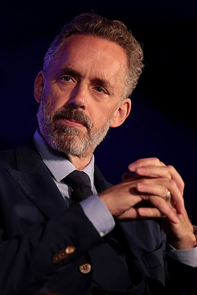
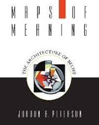

조던 피터슨

토론토 대학교(University of Toronto, U of T)는 캐나다 온타리오주 토론토에 있는 연구 중심 공립 대학이다. 토론토 대학교는 다운타운 세인트 조지(St. George) 캠퍼스를 중심으로 미시사가, 스카보로 분교 등 총 3개의 캠퍼스로 이루어져 있으며, 맥길 대학교, 브리티시 컬럼비아 대학교와 함께 캐나다를 대표하는 3대 명문 대학 중 하나이다. 또한, 캐나다 최대 규모이자 북미에서 하버드와 예일 다음으로 세번째로 많은 천 이백만권 이상의 장서를 보유한 44개의 도서관 시설을 갖추고 있다.
저술
Maps of Meaning: The Architecture of Belief is a 1999 book by Canadian clinical psy chologist and psychology professor Jordan Peterson. The book describes a theory for how people construct meaning, in a way that is compatible with the modern scientific understanding of how the brain functions. It examines the "structure of systems of belief and the role those systems play in the regulation of emotion", using "multiple academic fields to show that connecting myths and beliefs with science is essential to fully understand how people make meaning".
 12가지 인생의 법칙 ( 12 Rules for Life: An Antidote to Chaos ) 은 2018년에 출간된 캐나다 출신 임상 심리학자이며 심리학 교수인 조던 피터슨이 지은
책이다. 내용은 윤리적 원칙들, 심리학, 심령학, 종교와 개인적 일화등에 대한 수필을 통한 충고로 이루어져 있다. 이 책은 캐나다, 미국, 영국에서 3백만부 이상이 팔린 베스트셀러이다. 피터슨은 세계를 다니며 순회강연을 하고 인터뷰를 하고 있다.
12가지 인생의 법칙 ( 12 Rules for Life: An Antidote to Chaos ) 은 2018년에 출간된 캐나다 출신 임상 심리학자이며 심리학 교수인 조던 피터슨이 지은
책이다. 내용은 윤리적 원칙들, 심리학, 심령학, 종교와 개인적 일화등에 대한 수필을 통한 충고로 이루어져 있다. 이 책은 캐나다, 미국, 영국에서 3백만부 이상이 팔린 베스트셀러이다. 피터슨은 세계를 다니며 순회강연을 하고 인터뷰를 하고 있다.
작가의 유튜브 동영상
다음은 작가의 강의 동영상중 하나이며 무기력하거나 우울한 삶을 살고있는 젊은 사람들에게 도움을 주고자 하는 내용이다.